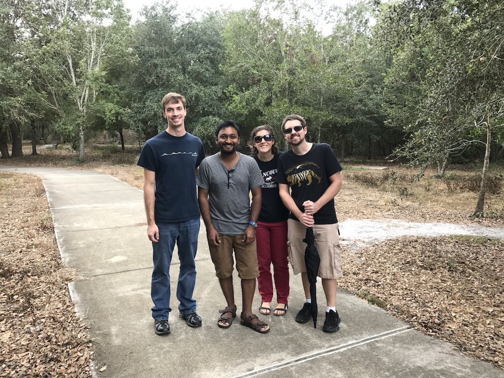
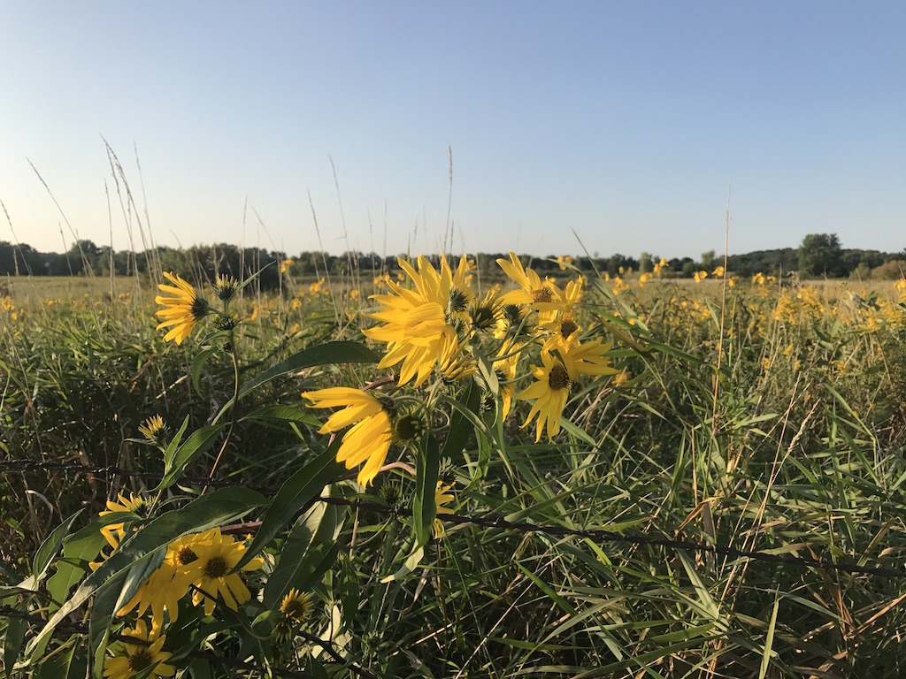
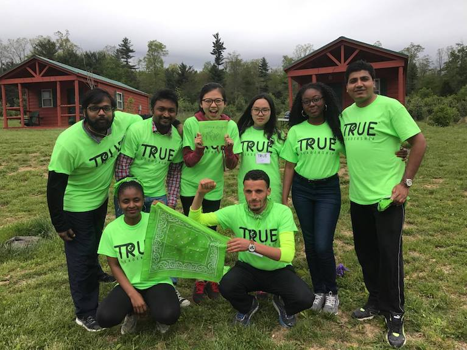

Travel
- 4 August 2021 Chicago, U.S
- 1 August 2021 Madison, U.S.
- 30 July 2021 Kingston, Rhode Island
- 25 July 2021 Orlando, Florida
- 4 June 2020 Kingston, Rhode Island
- 6 June 2020 Westerly, Rhode Island
- 1 January 2019 Reston, Virginia
- 30 March 2019 Chennai, India
- 30 April 2019 Tirunelveli, India
- 28 Dec 2018
- 20 May 2018
- 17 May 2017
- 15 May 2018
- 12 Mar 2018
- 12 Mar 2018
- 10 Mar 2018
- 1 Dec 2017
- 11 Sep 2017
- 24 May 2017
- 15 May 2017
- 25 April 2017
- 21 March 2017
- 25 Feb 2017
- 21 Feb 2017
- 7 Feb 2017
-
| INDIA | US | MIDDLE EAST | JAPAN | FIJI
- 16 Jan 2017
Tamil Nadu, India
Most parts of Tamil Nadu's buildings have Dravidian influenced Architecture. Tamil Nadu has some Victorian Era buildings.
If you are from a colder place, the first thing you'll notice is that Tamil Nadu does not really has winters. Winter, snow and below 40 degrees temperature, none of that in Tamil Nadu. In Celcius, it's below zero. Some great facts about Tamil culture –– Sangam period serves as foundation of Tamil family, values, literature. They have worthy moral precepts, stories. However, these works are not popular in the West
Kodaikanal, Tamil Nadu, India.

Kodaikanal is known as princess of hill station.
Hill station, is where we have a village near the top of a hill.
The Weather is around 70 degrees to 60 degrees.
My journey to Kodaikanal started, when I was in kindergarden. My parents took me to Kodaikanal,
I remember riding horses near the Lake. A peculiar memory is Guna's cave -- there's been tragic accidents in that place. A group of 10 college kids went missing. It's a deep underground cave with no clear acess.
Now, they have shielded it with caves for public safety.
Short History: Kodaikanal slowly formed as a retreat place for Missionaries, Tamil and British elites in Tamil Nadu. Tamil Nadu has semi-arid weather, April - June is the hottest time of year. It goes up to 110 degrees, (43 Celcius).
Initially only 20 people settle around late 1800's, but now there's a lot of people in Tamil Nadu relocating to Kodaikanal. Of course, it's not as big as Florida for retirees.
As you can surmise, having been to Kodaikanal numerous times; It is one of my favorite places on the planet. If you plan to visit Tamil Nadu, I recommend staying in Kodaikanal for a week. Enjoy the perfect weather, scenery and forest.
Tirunelveli, Tamil Nadu, India.

Tirunelveli has semi-arid weather.
I grew up in this town. Semi-arid is hot with 10-20 days of rainfall a year
It's a small town with about 500,000 people living in the district.
Nellaiappar Temple is the iconic symbol of Tirunelveli.
Another classic example of Dravidian architecture.
My first memory of Tirunelveli is near to Sarah Tucker College, Perumalpuram.
Founded in late 1800's for Woman's education -- It has served the community of Women in Tirunelveli district.
There's a popular destination called, Coutrallam.
It has waterfalls, where people often go for a short retreat.
I've been to coutrallam so many times, And I fall in love with majestic water-fall.
Education:
Tirunelveli has excellent middle and high schools. They call it the Oxford of South India.
Most of the credit goes to early Christian missionaries who founded these schools.
Other than that, there's not a complete history of Tirunelveli.
If you find something let me know.
Coimbatore
Coimbatore has 70 degrees weather, and rains often.
However, the city has numerous migrants from other parts of India.
You might bump into someone who speaks Hindi
Coimbatore also has great number of schools, and institutions.
Closer to Coimbatore -- there's Ooty, which is smaller than Kodaikanal.
I've visited the city three times. My memory of coimbatore is the Railway station. It is peculiar, has an underground walk-way.
Chennai Madras
Chennai is probably bigger than NYC in terms of population, and is capital of Tamil Nadu. It's hot, humid and has busy traffic.
I would say NYC's traffic is nothing compared to Chennai.
During my stay in Chennai –– I observed how quickly Chennai was growing economically.
It's interesting to visit a crowded city if you are young, And Chennai has lot of things to do.
If you are into History, I'd recommend checking out all the English East India company's history in Chennai.
A lot of people in Chennai are proud of their city. It was formerly called as Madras.
The first time, I visited Chennai was in 2008 during high school vacation.
My first memory of Chennai is guindy railway station, pallavaram station.
After that, I moved to Chennai for four years.
Madurai (Last vist: 2015)

Madurai is 150 kms from Tirunelveli. The City of Madurai's icon is Meenakshi Amman Temple, if you have not seen it.
I'd say Dravidian Architecture is unique and has stone-cut temples. My peculiar memory of Madurai is crossing the Mattuthavani bus stand. Madurai is considered to be part of Southern Tamil Nadu, there's a divide in accent/slang between Northern Tamil Nadu and Southern Tamil Nadu.
Trivanduram, Kerala. (2003, 2004, 2007)
Trivanduram, I visited it from my early schooling days. It's similar to other Tamil Nadu towns, cities. The Weather is not as hot as Tirunelveli. It's around 80 degrees. People speak Malayalam in Kerala. If you have not noticed, people in India speak different language, depending on the state.
Kottayam, Kerala (2010, 2011)
Kottayam is greener and I enjoyed my time visiting on a train.
People speak Malayalam.
New Delhi, May 2013.
I was excited to be in New Delhi.
As soon as I got from a train, I saw people from all over India.
India has millions of communities with over 20 different languages. Majority are from northern parts of India are in Delhi
Remember, India is diverse as Europe.
This makes India special. India was doomed to fail after the British had left.
India is staying togther as a Nation. I noticed
clean/good areas of New Delhi were near consulates.
I must admit there were poorer parts in New Delhi.
A lot of the signs in New Delhi were in Urdu.
I think, it goes back to the Mughal Empire.
I visited few bazaars in New Delhi.
Infact, I was traveling alone. I couldn't get much feedback from locals.
I wish -- I had stayed there for a while to learn about the people.
Gurgaon, Haryana. June 2013.
From New Delhi, there's trains to Gurgaon. I noticed that Northern India had rickshaws,
and they called their three-wheeled transport vehicle as fat fatia. Probably in Southern India,
I have not seen them, and people in Tamil Nadu called them as Autos.
Tajmahal, Agra.

What can I say about the Taj Mahal? Majestic architecture, grandeur, opulent, symbol of Mughal Empire.Taj Mahal is a must-visit in India
Infact, if you love history or architecture -- Then you'll fall in love with it.
Middle East

Saudi Arabia, June 2010
Middle East is extremely hot.
People's clothing style suits the weather.
I couldn't talk to the locals.
It gets as hot as 122 degrees.
I loved the Desert
Fiji June, 2016

Fiji is a great place to visit. You would love the weather in summer.
People are friendly. Fun fact, there are Indians in Fiji, who have assimilated to Fijian culture.
Fijians would belong to Islander culture.
Thailand
Bangkok Pattaya
July 2012
My visit to thailand was not planned. Thai people are known for friendliness and hospitality. Many tourists visit Thailand.
My first impression of Bangkok -- it's bigger than I had imagined. Bangkok had dozens of Buddhist temples. I don't think thailand has winters. There's plenty of things to do in Thailand as a tourist from scuba diving, buddhist temples.
North America
I've visited most of the states in U.S. One important factor to consider, if you prefer weather to be a huge factor; the colder states won't attract you. Unless, you are from Russia or Iceland.
Illinois
Rockford, Illinois
The first thing you'll notice is Chicago's airport is big. The Parking lots go on forever
Illinois had bad roads. Winters are brutal in Illinois.
Wisconsin
Madison, Wisconsin
Wisconsin had good roads and infrastructure.
Rhode Island
University of Rhode Island

Blizzards are common in North-East. Rhode Island is near to Boston.
New York City
Most diverse city on Planet.
There's plenty of things to do in NYC. People are from every country on the planet. NYC never sleeps. I was awake and could see lights.
You can find all ethnic food. From from any country on the planet
I visited Randall's Park in NYC. I attended a friend's wedding in Central Park.
Florida
Orlando, Daytona
Florida –– to a northerner (U.S), the buildings look different.
The Vegetation, plants, weather is tropical. Sunny weather, and lot of South American food.
West Virginia
Princeton, West Viriginia

West Virginia is considered rural place, but I might say -- we can't have it all in a state. Either you have too many people, or less. West Virginia has winters, but they're not as a cold as North-East of America. The Airport (Charleston) is small, the city is considerbly small and peaceful. If you like small places, with less people, you might enjoy it unless, you can't stand rural places.
California
I've visited San Fransico. I must admit, perfect weather. Pretty much everyone knows about California.
Texas
"Everything is bigger in Texas"
Texas has similar weather to Southern India. A lot of immigrants, the first thing, I noticed in Texas was the airport had Bush's name. Other than that, there's a lot of mexican cultural influence in Texas. Texas is huge, it takes a couple of days to drive around the state. They say, they have ranches as big as Rhode Island.
When I was in Houston, Texas. I loved how it had lot of authentic mexican restaurant. I entered one Mexican restaurant, and I was the only person who wasn't from Mexico. If you are fan of rice, or any asian food; You'll probably like it.
Oregon
Portland, Oregon is similar to North-East. However, Oregon's coastline is distinct and beautiful. I visited Newport, Oregon and found coastline to be picturesque.
Massachussets
Massachussets is the intellectual hub of America. It has most of the World's top universites with four seasons. If you come from Southern hemisphere of the Globe, then Mass will expose you to cold weather and make you tough. You are in for a weather shock, If you are below the equator. Make sure, you understand the weather, culture of New Englanders.
New Hampshire I visited a Ski-resort in New Hampshire. First thing on comparing New Hampshire with Rhode Island: It has a lot of trees. There's no sales taxes in New Hampshire. This is from 2015.
Connecticut Connecticut is cold. Winters are brutal. It takes only 40 minutes from Rhode Island to reach Connecticut. You can think Connecticut similar to Massachussets. I loved, fall weather in Connecticut. My first memory of Connecticut is from Middle School. This is in Tamil Nadu. I remember opening Atlas Encyclopedia, learning every state of America.
Content and design by Rick Rejeleene Some rights reserved.
Powered by Github
Contact the webmaster.

Welcome to my Travel micro-blog.
Keep it short and simple
I write summaries of my impressions on places. I'm blessed with opportunities to travel.
I desire to share glimpses of my travel experiences with you.
It's easy to read short, concise writings.
Planning to update this page into organized diary soon.
Most of the my thoughts are not yet organized in this page.
Unlike visiting Popular places, I explored Book Stores. This is my Second time in Chicago. Barbara Book store is a landmark at Airport. I visited a friend, who works at Heirloom used bookstore.
I've appreciated Wisconsin during my last visit. This time, I visited a farm in Madison, U.S. Summer time is good season to visit. Lastly, I visited same hiking spot, which I visited few years ago.
The quiet, peaceful town, my first impression of America. I discovered a new hiking spot in Kingston, Rhode Island.
Having been to Orlando many times, I was familiar with the Airport. This time, it was raining in Orlando. I visited a lake in a suburban community.
2020, COVID year was overwhelming. I managed to visit Kingston, Rhode Island. Things haven't changed much in Rhode Island, U.S. Saunderstown is a good place to see Newport Bridge. I thought, In India, pace of change, development is overwhelming.
A Lovely bookstore with a Coffee Shop is located downtown Westerly.
Reston Virginia has a lot of jobs and close to capital of America, D.C. Everyone is extremely busy and works diligently. It's too expensive to live close to D.C. I think New York City and D.C area might be on the same pace of life.
It's been a long time since I was in Chennai, India. I remember my undergrad days. I think I see more population, cars and traffic in Chennai. I visited Library and few Beaches. If you are from North America, the following things are going to strike to you -People are everywhere -Chaotic traffic -Depending on the area, you might see a lot of trash
It's been a long time, this city is my memory -Tirunelveli is extremely hot (100-120)
-Tirunelveli is dry, semi-arid
-Tirunelveli is growing
-Mostly Government employees
-Business Jobs
Denver, Colorado
I visited Denver with a close friend. I thought about Nikola Tesla's Lab. He spent some time in Colorado. It was cold in Colorado during December. The Weather was about 10 - 20 degrees. I stayed downtown. Most American downtowns are similar. Colorado had some interesting museums to visit.
Washington D.C
To non-Americans: D.C, Virginia, and Maryland are close to each other. People use D.C to refer this area. I stayed at Annandale, V.A. Annandale is a charming Korean-suburb. Varity of places to check-out, museums to visit. From what I hear; housing is expensive in D.C. Weatherwise, It is similar to North-East. It's not as brutal as New Hampshire or Maine. If you grew up in Small-town or medium-sized town, you'll notice more number of cars or traffic.
Pennsylvania
Hooray! I cannot believe this. I returned to the same place again in a year. I re-visited Pennsylvania. This time, I drove by myself from Columbus, Ohio. It was few hours drive from Ohio. I enjoyed driving through small-towns. I loved serving students and leading them through different activities. I've been traveling solo everywhere in the U.S.
Columbus, Ohio.
I'm on a whirlwind of traveling spree. To be honest; I should be grateful and thank God. I didn't see it coming in my life. I drove for two days from Florida to Columbus, Ohio. My impression on driving to Ohio are as follows: a) West Virginia had lot of mountains and change of scenary b) Carolina was flat And yes, I drove alone up to Ohio. Columbus, Ohio reminds a little bit of entering NYC. German Village in Columbus, Ohio brought me joys of Architecture. I appreciate the vintage architecture.
Blacksburg, Virginia.
Phew! A trip to Virginia. My first impression of Virginia -- Blacksburg had more trees than Orlando, Florida. It is subjective from your frame of reference.Most of the houses look similar to North-East. It doesn't get as cold as North-East.
Omaha, Nebraska.
What a surprise? I got a chance to visit Omaha, Nebraska. My friend showed me Warren Buffet's house. There were many cameras on the street. I perceived Nebraska and Iowa to be similar in terms of weather. For people outside the U.S, people are friendly in Nebraska and Iowa. I compare this to North-Eastern part of United States.
Ames, Iowa.
My plans to visit the beautiful state of Iowa came by random chance. I decided to take it. I was in Des Moines and Ames, Iowa. Plenty of corn-fields. Guess what? Iowa's economy is only 10% Agriculture. The Weather was similar to North-Eastern part of the United States. I liked the Mid-West due to smaller cities and not many people move to Mid-West. The Demographics are majority Anglo-Saxons.

Orlando, Florida has given me better weather compared to North-East. Bright-Sunny days in Orlando, Florida. My friends and I went for a walk in airport-lakes part. Guess what? I did see an alligator. Some of the things impressed on my memory were plenty of ponds, lakes. Palm trees and the city is spread out-wide. There are more people from Central and South America in Orlando, Florida. America has always been the land of immigrants. Kudos to you America.

I was in Madison, Wisconsin. Plenty of farm land, corn, and sunflowers. I delighted seeing corn and sunflower farms. My friend and I took his dog for a walk. My favorite memory in Madison, Wisconsin is this trail. Glad that I visited during September. Winters are brutal; Unless you breath snow.
I visited Pennsylvania, for a Leadership Retreat. It stretched me out physically
and emotionally. I was given a group of 7 students from different countries. I lead and coached them. I took the role
of a Listening. I appreciated their ideas. It was all about them. As a Leader, I am there to serve them. I let my group explore and grow. Something that stuck on my heart, was letting other people's
idea and respecting it.
We were located in middle of woods with more than a thousand acres. It is perfect for building a school.
It's away from busy cities. The Weather was around 70's, but it dropped to 50's.
Pennsylavania didn't seem different in terms of weather from New England. I surmised, that
it could get less colder than New England.

I'm planning to visit Pennsylvania, excited to go. Not sure, what to expect.
The Weather has been gloomy lately in North-East. As I mentioned earlier, if you grew up in Tropical
weather, make sure you pay attention to weather.
I visited North Carolina -- Ashville, Charlotte. Ashville is an hour drive from Charlotte, NC.
Even though, it's April, I couldn't make sense of the weird weather. Quick note to someone, who is from tropics or a place, where
there is no change in weather. This might seem trivial, but weather is important and part of North American life. We had sunlight for a while,
and then quickly lots of rain and gloomy weather.
It seemed that Billy Graham's Library is popular destination in North Carolina, I might be wrong. I noticed outside of the Airport, lot of advertisement to visit his Library.
Also, the airport was expanding with constructions and things seem to be out of place. I traveled for almost 15 hours from Providence to North Carolina.
Travelling is exhausting, if you do not get enough sleep and sunshine.

I visited Westerly, Rhode Island. It's on the border of Conneticut. Most of the architectures resembles colonial –– New England style. The place, where I stayed had three floors (American's count ground floor as first floor). Meanwhile, other countries might not do it in the same way. A small interesting point to observe. A Big issue in New England is heating, it's a big deal, and if a house doesn't have a good heating; It means you better prepare for hypothermia. And now you know, why early settlers freezed and starved to death.
I'm in New Hampshire, It's been three years and it's refreshing to re-visit. Skiing is exciting, And a lot of people in New England visit NH for skii resorts. As we were driving, we could not see the roads. Fog was above the roads, and it was difficult to drive at Night. GPS helped us to reach our destination. I loved skiing but it took a lot of energy of me. If you love Snow, then come visit New Hampshire. The State's motto is, "Live free or die."

Florida was wonderful trip. As you know, lots of sunshine and warmer people. This scence was my highlight of the trip, I took a plane from Orlando, Florida where it was around 80 degrees. And, then I landed in Providence, Rhode Island -- It was 20 degrees covered in Snow. A Day with bright sunlight and snow. Can you imagine it?
A Group picture with people that I met in Florida.

I'm travelling to Florida soon -- And, most New Englanders love going to Florida. The Weather becomes gloomy, cold in New England, that a lot of people feel frustrated with it. Less Sunlight makes people's mood change, and I understand why people want to retire in Florida. The Last time, I was in Florida -- I quickly admired the Spanish Influence, architecture of buildings. America is truly a melting pot of cultures, However it takes a generation or two for immigrants to get assimilated. There must be millions of sub-cultures within the United States. If you have never been to the United States, it is going to be hard for you to understand. If you are moving to America, you are not only bringing yourself, but your habits, thought, tradition, religion into this vast country. Try to reflect the differences, and learn from each other. One thing, that helps you to learn about culture is their history.
12 Jan 2017
Travelling expands your horizons -- However, living in another country or place is different from travelling. I have travelled to a wide variety of places. From Asia, Middle East to North America. I'll post my thoughts, history and facts about these places. If you have any questions or feedback, please do email me. Somethings you should notice about your ownself, the place you grew up is going to form the base perspective on things. You visit another place, it adds up, therefore your base perspective would always be with you. If you grew up in Europe, you'll have your frame of reference to your European context. When you move to another country -- it has to realign to the new culture or country. This helps you to understand your own cultural roots in a deeper way, because you can reflect the differences. It's good to ask questions, and learn from new culture. I think, there's a lot more on communication among cultures.
Most of my early travels are in parts of Tamil Nadu. People speak Tamil and English in Tamil Nadu
The State, where I grew up. I've found that one culture can learn from another rather than looking down on them.
Most of the time, people misunderstand cultures -- Seriously, most people have assumptions about other cultures.
Do not assume, rather ask questions and explore the differences. Indeed, there's a lot of history,
that we all need to learn from each others cultures.